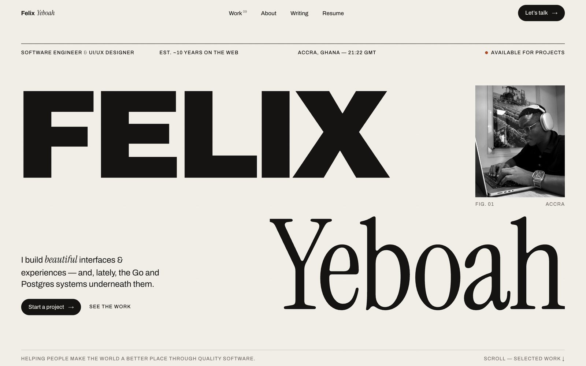
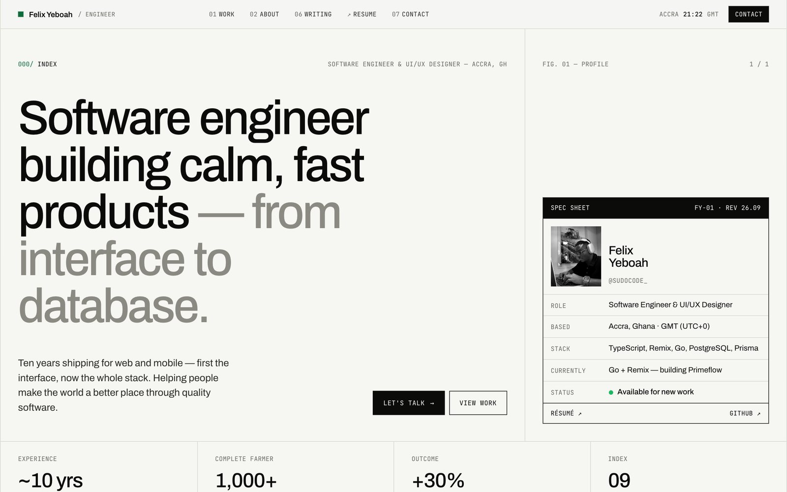
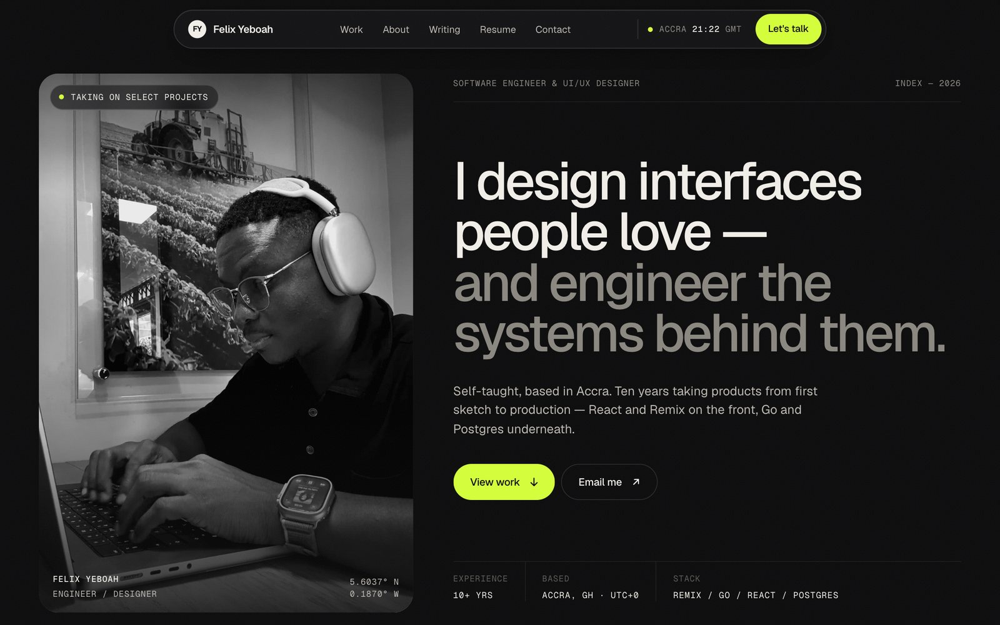
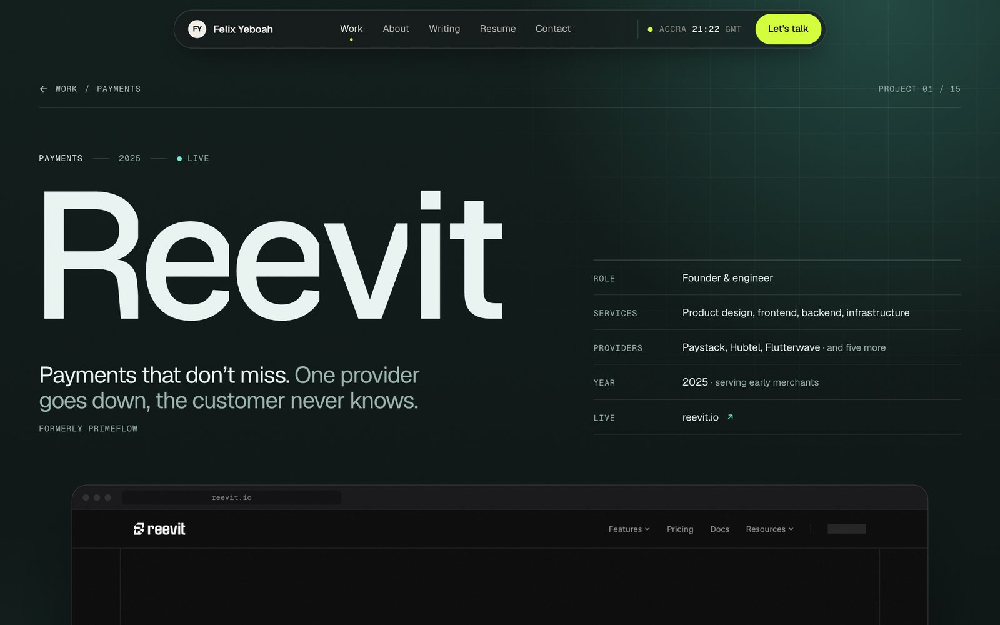
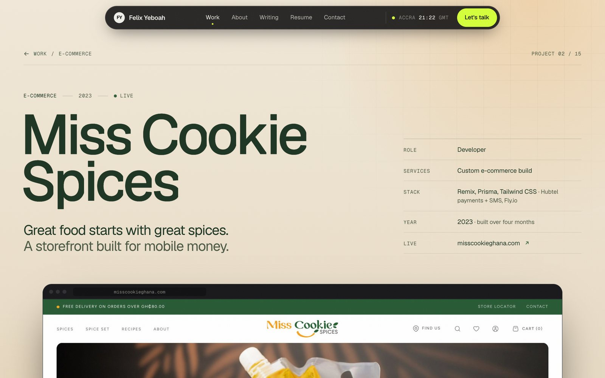
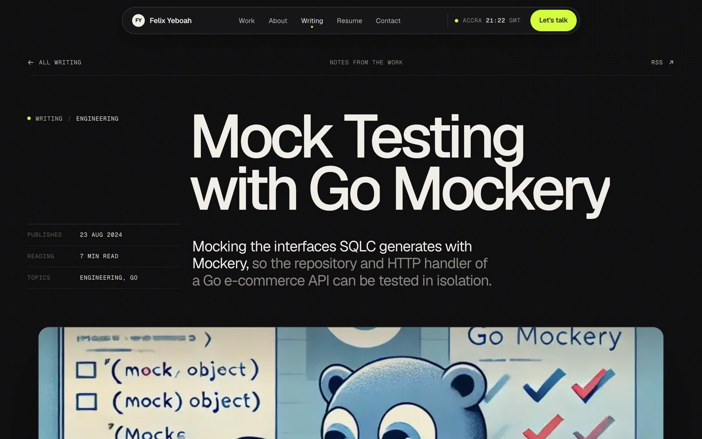

The old version of this site made you wait two seconds before it showed you anything. A preloader ran on every visit. After that, the case studies scrolled sideways with GSAP, which broke on phones, and the "Expertise" section was four long paragraphs of claims with nothing to back them up. There was one testimonial, the blog felt bolted on, and there was no obvious way to hire me.
I’d been meaning to fix it for a while. This post is about how I did it, and mostly about the decisions, because the decisions are what make the new site hang together.
Rules before pixels
Before any design, I wrote down what the new site was not allowed to do.
- No preloader. Content shows up immediately. Motion is an extra, and with reduced motion turned on, it’s gone.
- No invented proof. No fake client logos, no made-up numbers. If I don’t have a real figure, the page doesn’t show one.
- No generic AI look. No purple gradients, no Inter on everything, no emoji as icons.
- Every page works at 375 pixels wide. Not "works on mobile" in general. Checked at that width, every time.
The second rule turned out to be the one that shaped the most work. I’ll come back to it.
Three directions
I tried three directions for the landing page, each as a single HTML file with the same real content, so I was comparing designs and not copy.

Editorial looked like a magazine cover. Archivo for the heavy type, Instrument Serif for contrast, and a rust accent on cream. It had the most personality of the three.

Engineer Index went the other way. A spec sheet, numbered sections, JetBrains Mono everywhere, and a green accent on off-white. It read like documentation, which is honest about half of what I do and silent about the other half.

Dark Studio is the one I picked. Near-black background, Geist for everything you read, Geist Mono for everything you scan, and one lime accent.
What decided it was the work. Most of what I show is screenshots of client sites, and those sites have their own colours, many of them light. On cream or white they blur into the page. On near-black, each screenshot sits in its browser frame like something on a wall. The headline also covers both halves of what I do in one sentence, the interfaces and the systems behind them.
The design language
Dark Studio is small on purpose. The whole palette fits in a dozen lines:
:root { --bg: #0B0B0C; --bg-2: #111113; --bg-3: #18181B; --ink: #F2EFE9; --ink-2: #BDB9B1; --muted: #8A8780; --dim: #5C5A55; --line: rgba(242, 239, 233, .08); --line-2: rgba(242, 239, 233, .15); --accent: #D4FF3A; --on-accent: #0B0B0C;}The background isn’t pure black and the text isn’t pure white. #F2EFE9 is a warm off-white, and the greys under it step down in the same warm hue, so nothing looks like a default.
Lines do the work that boxes usually do. Sections are split by hairlines at 8% or 15% opacity instead of cards with shadows. Where something does need a container, like the portrait or a screenshot, it gets a 28 pixel radius, the same everywhere.
Lime is rationed. It goes on the main button, the dot under the current page in the nav, the focus ring, text selection and the small "live" dots. If lime appears anywhere else, it’s a mistake. That’s what makes the "Let’s talk" button the first thing you see on every page.
Mono is for metadata. Dates, categories, reading times, project numbers and labels are Geist Mono, uppercase, 12 pixels, slightly spaced out. Headlines and body text are Geist. The labels at the top of this post are mono and the article isn’t, so you can tell what to scan and what to read without thinking about it.
A few details are there because they’re true, not because they’re decoration. The nav shows the time in Accra, updated every ten seconds, so anyone writing to me can see what time it is here. Every screenshot of a client site sits in the same browser frame with the site’s real domain in the address bar.
Motion follows one easing curve, cubic-bezier(.16, 1, .3, 1), a fast start with a long soft finish. Things fade and rise into place as you scroll, once. With JavaScript off, or with reduced motion turned on, everything is simply there.
One template for fifteen projects
The question I spent the longest on was whether every project should get its own page design. Fifteen bespoke pages would be fun to make and miserable to keep up. One plain template would make Reevit, a payments platform, look the same as a wedding site.
I tried three case study layouts and ended with one template, filled from data. Each project gets a record with its name, category, credits, screenshots and whichever story blocks it has material for. Every block is optional. A project with a brief, features, a gallery and a quote gets all of them. A project with less gets fewer sections, and the numbering adjusts.

What makes each page feel like its own is colour. Each project has one brand colour, taken from its site, and the page builds its hero tint, accent text and muted text from it. Reevit is teal on dark green, Drobotix is gold and Miss Cookie Spices gets a light cream theme.

Generated colours are an easy way to ship unreadable text, so the build checks them. Every pair of colours that carries text, on every project page, has to pass WCAG AA contrast, 4.5 to 1. If one doesn’t, the build fails and says which pair. The nav, footer and focus rings stay lime on every page, so the site still feels like one site.
Project names vary from "CSS" to "Desmond Weds Akyeamaa", so the title size is set from an estimate of each name’s longest word, and long names never break mid-word.
Where the second rule got expensive
"No invented proof" is easy to write down. Keeping it meant going back to every project.
Seven projects had real write-ups from my old site. The other eight had a name, a category, a link and one screenshot. So I went back to each live site, went through its pages and took fresh screenshots, and wrote their case studies from what the sites actually say and do.
Some things only turned up because I looked. One project’s description mentioned a mortgage calculator, but the live site only has a waitlist, so the description changed. One site still has a placeholder phone number on its reservations page, so that screenshot stayed out. The link I had for Dronehub pointed at an old staging build that now returns an error, and the real site had moved to dronehubafrica.com with a lot more on it.
Where a page lists what a site is built with, the credit says "detected on the live site". That list comes from response headers and the site’s own code, not from memory. When the old write-up had numbers I can’t verify any more, like percentage gains from years ago, they’re gone.
Writing gets one extra typeface
Posts had the most to get right, because they range from a short personal essay to a tutorial with thirteen code blocks. I tried three layouts. Reader was a narrow column with everything in the margin. Notebook was a documentation-style layout with three columns. Editorial won.

It’s the only place on the site with a second typeface. Body text is set in Newsreader, a serif built for reading on screens, at a measure of 62 to 72 characters. Geist is great for headlines and labels. For fifteen minutes of reading, a serif is easier on the eyes.
Code blocks use a small highlighter written for this site, with three or four token colours and lime used sparingly. Each block has its file name, its language and a copy button, and long blocks collapse with a "Show all lines" button.
Some older posts had a subtitle copied from a different post, so the text under the title didn’t match the article. Those now use a one-line summary written from the post’s own first paragraph. Primeflow became Reevit, so that post has a new address and title, and a note at the top saying the body keeps its original wording.
Building it twice, on purpose
I built the whole site twice. First as plain HTML, with every page generated from the same project and post data and every link working over file://. That version was the reference: fast to change, and with no framework in the way.
Then I moved it into Next.js. Each page keeps its CSS exactly as it was in the prototype, loaded with that page and removed when you leave it. All 46 pages are generated ahead of time. The rule for being done was strict. Every page had to match the prototype at 1440 and 375 pixels wide, with the same page height and the same text. Old links still work too, /blog/... now redirects to /writing/....
What I’d tell myself at the start
Write the rules before the design. "No invented proof" cost more time than any layout, and it’s the reason every page on this site holds up when someone clicks through to the real project.
Design one system, not fifteen pages. The template, the data and the colour check did more for the project pages than any single layout could.
And keep the accent for the one thing you want people to do. On this site, that’s the lime button. If you’ve read this far, it says "Let’s talk".